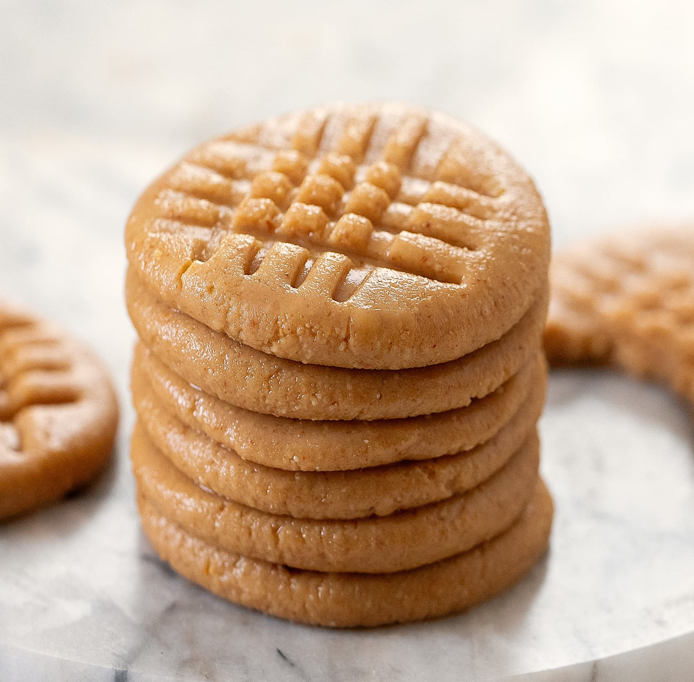

Mustachuu's Peanut Butter Jelly Time Cookie Recipe

Description
Ingredients
- 1 cup unsalted butter
- 1 cup crunchy peanut butter
- 1 cup white sugar
- 1 cup packed brown sugar
- 2 large eggs
- 1 teaspoon baking powder
- 1/2 teaspoon salt
- 1 1/2 teapsoons baking soda
Steps
- Cream butter, peanut butter, and sugars together in a bowl; beat in eggs.
- In a separate bowl, sift flour, baking powder, baking soda, and salt; stir into butter mixture. Put dough in refrigerator for 1 hour.
- Roll dough into 1 inch balls and put on baking sheets. Flatten each ball with a fork, making a crisscross pattern. Bake in a preheated 375 degrees F oven for about 10 minutes or until cookies begin to brown.
Return to my beautiful Mustache.